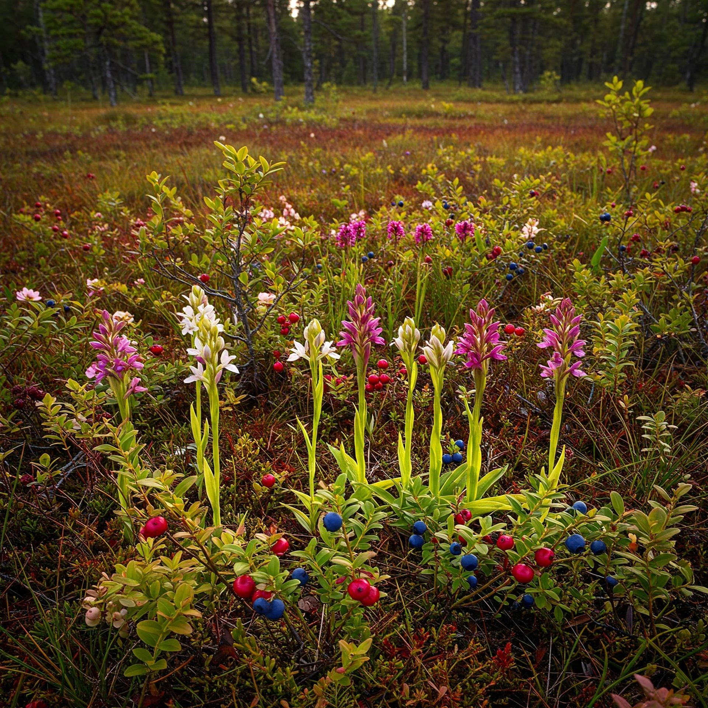

Les Gloutonnes présente un guide de plantes de tourbière et de plantes compagnes pour accompagner les plantes carnivores : orchidées terrestres (Bletilla, Dactylorhiza, Pleione…), arbustes acidophiles (Vaccinium, Calluna, Andromeda), vivaces (linaigrettes, laiches, iris), fougères et bulbeuses adaptées aux substrats acides. Ces fiches détaillent rusticité, exposition et conseils de culture pour jardins de tourbière et mini-tourbières.
Plantes de Tourbière
Découvre les compagnes idéales pour tes plantes carnivores
L'écosystème de la tourbière
Dans la nature, les plantes carnivores ne vivent jamais seules. Elles partagent leur habitat avec d'autres espèces adaptées aux mêmes conditions particulières : sol acide, pauvre en nutriments et souvent gorgé d'eau.
Recréer cet écosystème dans votre jardin permet non seulement d'obtenir un ensemble plus naturel et esthétique, mais favorise également le bien-être de vos plantes carnivores.
Découvre ma sélection : espèces typiques des tourbières acides (canneberges, linaigrettes, laiches…) et compagnes de bordure plus drainantes (Bletilla, Pleione, bruyères d'hiver…), pour composer un aménagement cohérent avec tes carnivores.

Plantes compagnes pour tourbière
Toutes les fiches sont chargées automatiquement à partir de ma base JSON et filtrables par type et difficulté.
Chargement des plantes…
Aucune plante ne correspond à tes critères
Modifie les filtres ou contacte-moi pour des recommandations personnalisées.
Besoin de conseils pour votre tourbière ?
Que vous soyez débutant ou expérimenté, je peux vous aider à sélectionner les plantes de tourbière idéales pour accompagner vos carnivores et créer un ensemble harmonieux et durable.